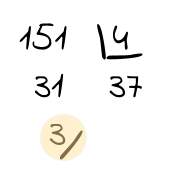

Operadors aritmètics
En la vida real, sovint realitzem operacions aritmètiques.
Ens ajuden a determinar el canvi quan fem una compra, l'àrea
d'una habitació, comptar la gent que hi ha a una cua, i coses així.
Les mateixes operacions s'utilitzen als programes.
Operacions aritmètiques
El llenguatge de programació Java proporciona operadors
per a realitzar operacions aritmètiques:
- suma
+
- resta
-
- multiplicació
*
- divisió
/
- mòdul
%
En aquest exemple s'imprimeixen el resultat d'aquestes operacions
aritmètiques amb operands enters:
System.out.println(5 + 10); // 15
System.out.println(10 - 5); // 5
System.out.println(5 - 10); // -5
System.out.println(5 * 10); // 50
System.out.println(10 / 5); // 2
System.out.println( 10 % 5); // 0
Tal vegada l'operador menys conegut és el mòdul %.
Aquest operador retorna el residu de la divisió:
System.out.println(151 % 4); // 3
System.out.println(151 / 4); // 37

Precedència d'operadors
Hi ha un ordre de preferència a les operacions artimètiques, inclosos els parèntesi:
() 🡒 * / % 🡒 + -
Tenint en compte aquesta preferència es poden realitzar expressions més complexes:
System.out.println(1 + 3 * 4 - 2); // 11
System.out.println((1 + 3) * (4 - 2)); // 8
System.out.println(-10 + 4); // -6
System.out.println(-(10 + 4)); // -14
Tipus dels operands
El resultat d'una expressió artimètica depèn també del tipus dels seus operands (int o float).
Si una operació es realitza amb operands int el resultat serà de tipus int, però
si en una operació al menys un operand és float el resultat serà de tipus float.
Aquesta regla és especialment important en les divisions, ja que una operació de divisió entre operands
enters donarà com a resultat un enter (és a dir, sense decimals), però si hi ha un decimal aleshores donarà
el resultat amb decimals:
System.out.println(5 / 2); // 2 (resultat enter, sense decimals)
System.out.println(5f / 2); // 2.5
System.out.println(5 / 2f); // 2.5
System.out.println(5f / 2f); // 2.5
Escriu el resultat d'aquesta operació:
2 + 3 * 4 + 5
19
Què imprimirà aquesta sentència?
System.out.println(2 + (-3) + 5 + (-8));
-4
Ordena els operadors segons la preferència
1
( )
2
* / %
3
+ -
Escriu el valor que retorna aquesta expressió:
(-5) * (-10) * (-20)
-1000
Quina de les següents expressions és igual a 12?
24 / 2
24 % 2
25 / 2
12 % 13
Quin és el resultat d'aquesta expressió?
3 / 2f
1.5
Què imprimeixen aquestes sentències?
System.out.println((5 / 2) * (5 / 2));
4
System.out.println((5 / 2) * (5f / 2));
5.0
Operadors aritmètics amb caracters i Strings
Caracters
Quan utilitzem els operadors aritmètics amb valors de tipus char,
s'utilitza el valor numèric Unicode corresponent al caracter.
Així, per exemple, el valor unicode del caracter 'a' és 97,
i serà aquest el valor que s'utilitzi en les operacions aritmètiques amb el caracter 'a'.
System.out.println('a' + 0); // 97 (97 + 0)
System.out.println(5 + 'a'); // 102 (5 + 97)
System.out.println('a' - 5); // 92 (97 - 5)
System.out.println('a' * 10); // 970 (97 * 10)
System.out.println('a' / 10); // 9 (97 / 10)
System.out.println(-'a' + 'b'); // 1 (-97 + 98)
A la wikipedia pots trobar la taula de caracters Unicode.
Per a esbrinar el valor numèric d'un caracter busca'l a la columna
Glyph i el seu valor a la columna Decimal
Strings
Podem utilitzar l'operador suma + amb Strings, però la seva funció no serà la suma, sinò la
concatenació, és a dir, unir els elements un darrere de l'altre.
D'aquesta forma, si algun dels dos operands en una expressió és un String, el resultat serà
la concatenació dels operands, i no la suma.
System.out.println("Java" + "Script"); // JavaScript
System.out.println("Java" + 8); // Java8
System.out.println("Java" + 14 + 1); // Java141
System.out.println("Java" + (14 + 1)); // Java15 (primer es fan els parentesi)
System.out.println("Java" + 8 * 2); // Java16 (primer es fa la multiplicacio)
System.out.println("Java" + 8 + " TM"); // Java8 TM (primer es fa la multiplicacio)
System.out.println("Java" - 8); // Error! només es pot usar l'operador +
System.out.println("Java" + 8 - 1); // Error! No és vàlid ja que "Java"+8 és "Java8",
// i després el "Java8" - 1 no és valid
Què imprimiran les següents sentències?
System.out.println("Hola " + "mon");
Hola mon
System.out.println("Hola " + 330);
Hola 330
System.out.println("Hola " + 'm' + 'o' + 'n');
Hola mon
System.out.println("Hola " + ('m' + 'o' + 'n'));
Hola 330
System.out.println('m' + 'o' + 'n' + "Hola");
330Hola
Operacions aritmètiques amb variables
També podem utilitzar els valors de les variables per a realitzar operacions aritmètiques.
Com ja hem fet anteriorment, accedirem al valor d'una variable pel seu nom.
int a = 20;
int b = 10;
System.out.println(a + b + 5); // 35 (20 + 10 + 5);
float temperatura = 37.5f;
System.out.println("Temperatura màxima = " + temperatura); // concatenacio
Per una altra banda, podem guardar en una variable el resultat retornat per una expressió, sempre que
la variable sigui del tipus adequat al valor que retorna una expressió.
int a = 10 + 10;
int b = a + 10;
System.out.println(a + b + 5); // 55 (20 + 30 + 5)
char versio = '8';
String llenguatge = "Java";
String llenguatgeVersio = llenguatge + " " + versio; // Java 8
Per últim, també es pot utilitzar el valor d'una variable en una expressió, i guardar el valor
resultant en la mateixa variable.
int n = 10;
n = n + 4; // 14 (10 + 4)
System.out.println(n); // 14
String lang = "";
lang = lang + 'j';
lang = lang + 'a';
lang = lang + 'v';
lang = lang + 'a'; // java
L'operador d'asignació = té una forma abreujada de fer aquestes operacions. Consisteix
a posar la operació que s'ha de realitzar abans del =. Els exemples anteriors es poden
abreujar així:
int n = 10;
n += 4; // equivalent a 'n = n + 4'
String lang = "";
lang += 'j';
lang += 'a';
lang += 'v';
lang += 'a'; // java
Com pots veure, aquesta forma és més concisa. Es poden usar els altres operadors d'aquesta forma
abreujada: -=, *=, /=, %=.
Operadors artimètics unaris
L'operador d'increment ++, i l'operador de decrement --, incrementen/decrementen el
valor d'una variable en 1.
int n = 10; // 10
n++; // 11
n--; // 10
Seria l'equivalent a escriure:
int n = 10; // 10
n += 1; // 11
n -= 1; // 10
I també equivalent a:
int n = 10; // 10
n = n + 1; // 11
n = n - 1; // 10
Tres formes diferents d'escriure el mateix!
Introdueix el valor de la variable result
int a = 4, b = 6;
int c = a + b;
int result = c + (a + b) * c;
110
Introdueix el valor de cada variable, després de cada sentència d'aquest programa:
| a | b |
int a = 0; |
0 |
|
int b = a + 1; |
0 |
1 |
a = a + 1; |
1 |
1 |
b *= 2; |
1 |
2 |
a++; |
2 |
2 |
Introdueix el valor de cada variable, després de cada sentència d'aquest programa:
| a | b |
int a = 10; |
10 |
|
int b = a + 10; |
10 |
20 |
a += 10; |
20 |
20 |
a += b; |
40 |
20 |
a += a + b; |
100 |
20 |
a += a + a; |
300 |
20 |
Operadors booleans
Recordem que el tipus de dada boolean només té
dos valors possibles: true i false. També
és conegut com el tipus lògic.
Aquest tipus s'usa de forma habitual en els llenguatges
de programació per a representar coses que només poden
tenir dos estats oposats com on/off,
sí/no.
Si estas escrivint un programa que fa el seguiment de
les obertures de portes trobaràs natural utilitzar un
boolean per a guardar l'estat actual d'una porta (oberta/tancada).
O en un videojoc, hi pot haver moltes variables boolean
per a mantenir l'estat d'un jugador (isAlive, isJumping, hasSword, ...).
Les operacions que podem realitzar sobre valors boolean són:
-
NOT !
Retorna la inversió d'un valor booleà:
System.out.println(!false); // true
System.out.println(!true); // false
-
AND &&
Retorna true si tots dos operands són true, si no, retorna false.
System.out.println(true && true); // true
System.out.println(true && false); // false
System.out.println(false && true); // false
System.out.println(false && false); // false
-
OR ||
Retorna true si al menys un operand és true, si no, retorna false.
System.out.println(true || true); // true
System.out.println(true || false); // true
System.out.println(false || true); // true
System.out.println(false || false); // false
Hi ha un altre operador anomenat XOR ^.
En aquest curs utilitzarem més sovint ! && ||.
Però en cas de que el necessitis, que sàpigues que hi és.
Retorna true si els dos operands tenen diferents valors, si no,
retorna false
System.out.println(true ^ true); // false
System.out.println(true ^ false); // true
System.out.println(false ^ true); // true
System.out.println(false ^ false); // false
Precedència d'operadors lògics
A sota hi ha els operadors booleans ordenats de més a menys prioritat:
() → ! → && → ||
Tenint en compte aquesta precedència podem realitzar expressions complexes.
System.out.println(true && !false); // true
System.out.println(true && !true); // false
System.out.println(false || !false); // true
System.out.println(true && false || true); // true
System.out.println(true || true && false); // true
System.out.println((true || true) && false); // false
System.out.println(!(true || false)); // false
Curtcircuit
Un punt interessant és que els operadors && i || no avaluen el segon operand si no és necessari.
Quan el primer operand d'una operació && és false, el resultat serà false sigui quin sigui
el segon operand; i quan el primer operand d'una operació || és true, el resultat serà true sigui quin
sigui el segon operand. Així que:
false && ... 🡒 false, ja que no és necessari saber que hi ha a la dreta
true || ... 🡒 true, ja que no és necessari saber que hi ha a la dreta
Aquest comportament es conegut com avaluació curtcircuit (no confondre amb curtcircuit elèctric).
Redueix el temps de computació i pot ser utilitzat per a evitar alguns errors en programes.
Fixa't en aquest codi:
System.out.println(false && (true || (false && !true) || (!true && (false && true) && true || !false)));
No importa el que hi hagi més enllà del primer false &&; retorni true o false, el
resultat de l'expressió completa serà false.
Operacions booleanes amb variables
Igual que amb els operadors aritmètics, podem usar variables en les expressions booleanes. I també guardar el
valor retornat per una expressió booleana en una variable de tipus boolean.
boolean a = true;
boolean b = a || false; // true
b = !b; // false
Un altre exemple amb una expressió booleana complexa,
per a determinar la possibilitat d'anar a fer senderisme
a l'estiu o en altres estacions:
boolean faFred = false;
boolean faSol = true;
boolean esEstiu = false; // suposem que es tardor
boolean senderisme = faSol && (!faFred || esEstiu); // true, let's go trekking
Escriu el resultat d'avaluar aquestes expressions lògiques:
!(true || false)
false
!true && !false
false
!(true && false)
true
true || true || !true
true
true && true && !true
false
Hi ha aquestes variables:
boolean b1 = true;
boolean b2 = false;
boolean b3 = true;
boolean b4 = false;
Quin és el resultat d'aquesta expressió?
b1 && (b2 || (b3 || b4))
true
Operadors relacionals
Java proporciona sis operadors relacionals per a comparar números:
== (igual a)!= (no igual a)> (major que)>= (major o igual que)< (menor que)<= (menor o igual que)
El resultat d'aplicar un d'aquests operadors relacionals és de
tipus boolean independentment dels tipus dels seus operands.
Aquí tens exemples d'aplicar els operadors relacionals a diferents tipus
d'operands. Observa que el valor retornat en avaluar l'expressió és sempre
true o false.
System.out.println(5 > 2); // true
System.out.println(5 == 2); // false
System.out.println(5 >= 2); // true
System.out.println(5 != 2); // true
System.out.println(4 + 1 == 5); // true
System.out.println(5f == 5); // true
System.out.println(!false == true); // true
System.out.println(false == true); // false
System.out.println('a' == 97); // true
System.out.println('a' < 'b'); // true
Fixa't que podem fer operacions relacionals entre enters, floats i chars (recorda que
els chars són convertits al seu valor Unicode). També podem fer operacions
relacionals entre booleans. Però no podem fer-ho entre números i booleans, ja que no té
cap sentit:
System.out.println(5 <= true); // invalid! no té cap sentit
Comparar Strings
Per últim has de notar que no hem fet cap operació relacional amb el tipus String.
Java permet comparar la igualtat de dos Strings però no és amb l'operador ==.
Per a comparar dos Strings hem d'utilitzar el mètode equals(), així:
"hola".equals("adeu") // false
"hola".equals("ho" + "la") // true
Operadors relacionals amb variables
Com ja hauràs suposat, podem utilitzar variables en les expressions relacionals.
Per a guardar el resultat d'una expressió relacional, usarem variables de tipus boolean.
int h1 = 10;
int h2 = 20;
boolean mesGran = h1 > h2; // false
boolean diferents = h1 != h2; // true
String langA = "Java";
String langB = "JavaScript";
boolean sameLang = langA.equals(langB); // false
Què imprimeix aquest programa?
System.out.println("java".equals('j' + 'a' + 'v' + 'a'));
true
false
És invàlid, perquè falta un parèntesi
És invàlid, perquè no es poden sumar caracters
Què imprimeix aquest programa?
int number = 1000;
boolean result = number + 10 > number + 9;
System.out.println(result);
true
Combinar operadors artimètics, relacionals i lògics
En Java, no es pot escriure una expresió com a < b < c
(per veure si b està entre mig d'a i c).
En lloc d'això, has d'unir dos expressions booleanes utilitzant operadors com || i &&.
a < b && b < c // significa a < b < c
Podem combinar en una mateixa expressió, operadors aritmètics, relacionals i lògics.
La prioritat dels tipus d'operadors és:
Aritmètics 🡒 Relacionals 🡒 Lògics
En el següent exemple hi han els tres tipus d'operadors:
System.out.println(2 + 2 == 5 || 3 + 3 == 6); // true
El programa imprimeix true, perquè:
-
Primer es fan els Aritmètics (la suma):
System.out.println(4 == 5 || 6 == 6);
-
Després els relacionals (l'igual que):
System.out.println(false || true);
-
Per últim els lògics (l'OR):
System.out.println(true);
El següent exemple comprova que un número estigui dintre d'un rang:
int number = 150;
int inferior = 100, superior = 200;
boolean dintreDelRang = number > inferior && number < superior;
Quin valor retorna aquesta expressió?
10 % 5 >= 2 || 10 / 5 <= 2 && !(10 - 5 != 2)
true
false
Operador ternari
La sintaxi general de l'operador ternari ?: és aquesta:
condicio ? valorSiCerta : valorSiFalsa
Aquest operador retorna el valor valorSiCerta si la condició s'avalua a true.
Si la condició resulta ser false, aleshores retorna valorSiFalsa.
Exemple:
System.out.println(10 > 5 ? "major" : "menor"); // major
int num = 10;
System.out.println(num % 2 == 0 ? "parell" : "imparell"); // parell
num = 11;
System.out.println(num % 2 == 0 ? "parell" : "imparell"); // imparell
També podem guardar el resultat que retorna l'operador ternari en un variable. El tipus d'aquesta
variable ha de coincidir amb el tipus dels valors valorSiCerta i valorSiFalsa.
Per exemple, el següent programa calcula la 'quota mensual' d'un soci, si el soci té més de 10 anys d'antiguetat,
la quota són 30, i si no en són 40.
int anysAntiguetat = 3;
float quotaMensual = anysAntiguetat > 10 ? 30f : 40f;
System.out.println(quotaMensual); // 40.0
L'operador ternari es pot enllaçar per a fer expressions més complexes:
condicio1 ? valor1
: condicio2 ? valor2
: condicio3 ? valor3
valor4;
El valor retornat és el que primer compleix la condició. Si no es compleix cap condició, aleshores es
retorna l'últim valor.
int edat = 18;
String beguda = edat < 18 ? "Coca-cola"
: edat < 45 ? "Cervesa"
: "Vi";
System.out.println(beguda); // Cervesa
Quin valor tindrà la variable x?
int a = 10;
int b = 30;
int c = 20;
String x = a < b ? "One"
: b < c ? "Two"
: "Three";
One
Two
Three